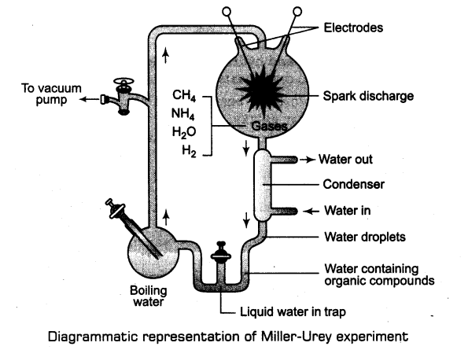
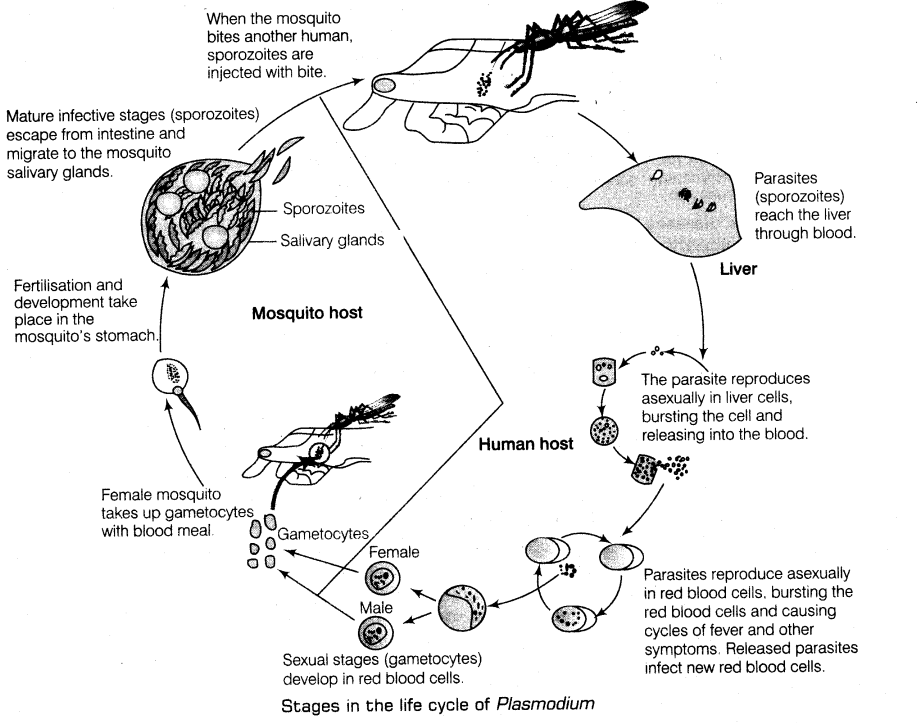

Biology
Chapter 1:Evolution
- The study of history of life forms on earth is called evolutionary biology.
- Evolution is a process that results in heritable changes in population spread over many generations leading to diversity of organisms on earth.
- Origin of life is considered a unique event in the history of universe.
(i) The Universe
(a) It is very old-almost 20 billion years ago. It contains huge galaxies.
(b) Galaxies contain stars and clouds of gas and dust.
(c) The origin of universe is explained by Big Bang theory.
(d) The Big Bang theory states that a huge explosion occurred, the universe expanded, temperature came down and hydrogen and helium were formed later. The galaxies were then formed due to condensation of gases under gravitation.
(ii) The earth was supposed to have been formed about 4.5 billion years back in the solar system of the milkyway galaxy.
(a) Water vapour, methane, carbon dioxide and ammonia released from molten masses covered the surface.
(b) UV rays from the sun broke up water molecule into hydrogen and oxygen and lighter hydrogen escaped.
(c) Oxygen combined with ammonia and methane to form water, carbon dioxide and others.
(d) Ozone layer formed, as it cooled, the water vapour fell as rain to fill depression and form oceans.
(e) Life appeared 500 million (about 4 billion years back) years after the formation of earth.
- Theories of origin of life were given by different thinkers and scientists.
(i) Theory of special creation states that God created life by his divine act of creation.
(ii) Theory of panspermia/cosmozoic theory, given by early Greek thinkers states that the spores or panspermia came from outer space and developed into living forms.
(iii) Theory of spontaneous generation states that life originated from decaying and rotting matter like straw, mud, etc.
(a) Louis Pasteur rejected the theory of spontaneous generation and demonstrated that life came from pre-existing life.
(b) In his experiment, he kept killed yeast cells in pre-sterilised flask and another flask open into air. The life did not evolved in the former but new living organisms evolved in the second flask.
(iv) Theory of chemical evolution or Oparin-Haldane theory states that life originated from pre-existing non-living organic molecules and that formation of life was preceded by chemical evolution.
The conditions on the earth that favoured chemical evolution were very high temperature, volcanic storms and reducing atmosphere that contained CH4,NH3, water vapour, etc.
- Millers experiment provided experimental evidence for chemical evolution.
(i) The experiment was carried out by SL Miller and HC Urey in 1953.
(ii) He took a closed flask containing CH4,H2,NH3 and water vapour at 800°C and created electric discharge. These conditions were similar to those in primitive atmosphere.
(iii) After a week, formation of amino acids were observed. Complex molecules like sugars, nitrogen bases, pigments and fats were seen in the flask by other scientist.
(iv) Analysis of the meteorite also revealed the presence of similar compounds.
(v) Chemical evolution of life was more or less accepted.

Chapter2:Human Health and disease
- Health is defined as a state of complete physical, mental and social well-being.
(i) The factors which affect human health are:
(a) Genetic disorders (b) Infections (c) Lifestyle.
(ii) Balanced diet, personal hygiene and regular exercise are very important to maintain good health.
(Hi) Awareness about diseases and their effect on different body functions, vaccination against infectious diseases, proper disposal of wastes, control of vectors, maintenance of hygienic food and water resources are necessary for achieving good health.
- Disease is a state when functioning of one or more organs or systems of the body is adversely affected, characterised by various signs and symptoms.
Diseases can be divided broadly into the following two categories depending on the
modes of transmission
I. Infectious diseases which easily transmit from one person to another, e.g. AIDS, common cold, etc.
II. Non-infectious diseases which does not transmit from one person to another, e.g. cancer, diabetes, etc.
(i) Disease causing organisms are called pathogens, e.g. bacteria, viruses, fungi, protozoans, helminthes, etc.
(ii) The above described pathogens enter the body by direct contact, contaminated food and water, droplet infection, etc.
(iii)The pathogens multiply in body cells, interfere with normal vital activities, cause morphological and functional damage.
(iv) Infectious diseases can be divided into certain categories, based on the type of pathogen
Infectious Diseases
Bacterial Viral Protozoan Fungal Helminthic
e.g. pneumonia, e.g. common cold, e.g. amoebiasis, e.g. ringworm, e.g. ascariasis, ,
plague, typhoid, polio, etc. malaria, etc. athelete’s foot, etc. filariasis, taeniasis, etc.
diphtheria, etc
(c) Life cycle of Plasmodium is given in the figure.
- Some of the common infectious diseases are:
I. Bacterial Diseases
(i) Typhoid is caused by bacterium (Salmonella typhi).
(a) S. typhi enters the small intestine through food and water contaminated with them and migrate to other organs through blood.
(b) Intestinal perforation and death may occur in severe cases.
(c) Widal test is a confirmation test for typhoid.
(d) Symptoms are high fever (39-40°C), weakness, stomach pain, constipation, headache and loss of appetite.
(ii) Pneumonia is caused byStreptococcus pneumoniae and Haemophilus influenzae.
(a) These bacteria infect alveoli of the lungs. The alveoli get filled with fluid causing decrease in respiratory efficiency of the lungs.
(b) Pneumonia spreads by inhaling droplets/aerosol from infected individuals or even by sharing glasses and utensils with patients.
(c) Symptoms of pneumonia are fever, chills, cough, headache, etc.
(iii) Dysentery, plague, diphtheria, etc., are some other examples of bacterial diseases.
II. Viral Disease
Common cold occurs due to a group of viruses called rhino viruses.
(a) These viruses infect the nose and respiratory passage but not the lungs.
(b) Common cold is characterised by nasal congestion and discharge, sore throat, hoarseness, cough, headache, tiredness, etc., which generally last for 3-7 days.
(c) The infection occurs due to cough or sneezes of an infected person, either inhaled directly or transmitted through contaminated objects such as pens, books, cups, computer’s keyboard or mouse, etc.
III. Protozoan Diseases
(i) Malaria is caused by a protozoan, Plasmodium sp. (P. vivax, P. malariae and P. falciparum).
(a) P. falciparum causes most serious kind of malaria, i.e. malignant malaria which can be fatal.
(b) Female Anopheles mosquito is the vector of Plasmodium, which transfer the sporozoites (infectious form) in human body.
(c) Life cycle of Plasmodium is given in the figure.
